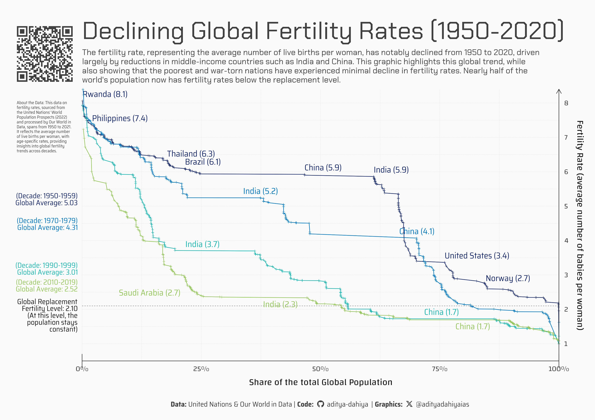

The fertility rate, or average number of live births per woman, has significantly declined from the 1950s to the 2010s. This graphic illustrates the downward trend in fertility rates across different decades and countries worldwide.
A4 Size Viz
Our World in Data
Public Health
Author
Aditya Dahiya
Published
July 11, 2024
Source of the Data: The fertility rate data is sourced from the United Nations’ World Population Prospects (2022) and has been processed and presented by Our World in Data. The dataset provides the average number of live births a hypothetical cohort of women would have at the end of their reproductive period, assuming they experienced the fertility rates of a specific period throughout their lives without mortality impact. The data covers the period from 1950 to 2021 and is measured in live births per woman. Age-specific fertility rates are included, indicating the number of births to women in particular age groups, divided by the number of women in those groups, across annual civil calendar years. This dataset, part of the 27th edition of the official global population estimates, is based on extensive data on population size, fertility, mortality, and international migration for 237 countries or areas. For more information, visit the UN’s World Population Prospects page here and here. The data was retrieved on September 9, 2022. Our World in Data processes the data through various steps to ensure accuracy, including standardizing country names, converting units, and calculating derived indicators. Detailed information on their data processing can be found here. For citation purposes, use: UN, World Population Prospects (2022) – processed by Our World in Data.

Figure 1: This graphic shows the changes in global fertility rates from the 1950s to the 2010s. The X-axis represents the proportion of the world population (0% to 100%), while the Y-axis shows the fertility rate levels (number of births per woman). The lines, colored by decade, illustrate the shift from highest to lowest fertility rate countries over time.
How I made these graphics?
Getting the data
Code
# Data Import and Wrangling Toolslibrary(tidyverse) # All things tidylibrary(owidR) # Get data from Our World in R# Final plot toolslibrary(scales) # Nice Scales for ggplot2library(fontawesome) # Icons display in ggplot2library(ggtext) # Markdown text supportlibrary(showtext) # Display fonts in ggplot2library(colorspace) # To lighten and darken colourslibrary(patchwork) # Combining plotssearch1 <- owidR::owid_search("fertility")df1 <-owid("children-per-woman-un")popdf <-owid("population-with-un-projections")
Visualization Parameters
Code
# Font for titlesfont_add_google("Chakra Petch",family ="title_font") # Font for the captionfont_add_google("Saira Semi Condensed",family ="caption_font") # Font for plot textfont_add_google("Changa",family ="body_font") showtext_auto()# Colour Palettemypal <-rev(paletteer::paletteer_d("LaCroixColoR::Lime")[c(1,2,4:6)])# Background Colourbg_col <-"grey98"text_col <-"grey10"text_hil <-"grey25"# Base Text Sizebts <-80plot_title <-"Declining Global Fertility Rates (1950-2020)"plot_subtitle <-"The fertility rate represents the average number of live births per woman over her lifetime. This graphic illustrates the significant decline in fertility rates from the 1950s to 2020, highlighting how middle-income countries, particularly India and China, have driven this trend. As nations become more prosperous, fertility rates tend to decrease, with the 2020 data showing that nearly half of the world's population now has fertility rates below the replacement level."data_annotation <-"About the Data: This data on fertility rates, sourced from the United Nations' World Population Prospects (2022) and processed by Our World in Data, spans from 1950 to 2021. It reflects the average number of live births per woman, with age-specific rates, providing insights into global fertility trends across decades."# Caption stuff for the plotsysfonts::font_add(family ="Font Awesome 6 Brands",regular = here::here("docs", "Font Awesome 6 Brands-Regular-400.otf"))github <-""github_username <-"aditya-dahiya"xtwitter <-""xtwitter_username <-"@adityadahiyaias"social_caption_1 <- glue::glue("<span style='font-family:\"Font Awesome 6 Brands\";'>{github};</span> <span style='color: {text_hil}'>{github_username} </span>")social_caption_2 <- glue::glue("<span style='font-family:\"Font Awesome 6 Brands\";'>{xtwitter};</span> <span style='color: {text_hil}'>{xtwitter_username}</span>")plot_caption <-paste0("**Data:** United Nations & Our World in Data | ","**Code:** ", social_caption_1, " | **Graphics:** ", social_caption_2 )rm(github, github_username, xtwitter, xtwitter_username, social_caption_1, social_caption_2)
Data Wrangling
Code
# A tibble for the fertility levels in each decadedf2 <- df1 |>as_tibble() |> janitor::clean_names() |>rename(fertility = fertility_rate_sex_all_age_all_variant_estimates) |>filter(!is.na(code)) |>filter(entity !="World")# A tibble of populations for each coutnry in each decadepopdf1 <- popdf |>as_tibble() |> janitor::clean_names() |>filter(!is.na(code)) |>filter(entity !="World") |>mutate(population =ifelse(is.na(population_sex_all_age_all_variant_estimates), population_sex_all_age_all_variant_medium, population_sex_all_age_all_variant_estimates ) ) |>select(-c(population_sex_all_age_all_variant_estimates, population_sex_all_age_all_variant_medium))# Creating a separate data frame for each decade by a common function so # that we can create descending order of fertility for beautiful plotting.# Creating a factor levels of Countries sorted by fertility levels# in descending order of fertility levels in each decade.make_decade_df <-function(years_to_select, to_label){ temp_df_fertility <- df2 |>filter(year %in% years_to_select) |>group_by(entity, code) |>summarize(fertility =mean(fertility, na.rm = T)) |>arrange(desc(fertility)) |>ungroup() temp_df_pop <- popdf1 |>filter(year %in% years_to_select) |>group_by(entity, code) |>summarise(population =mean(population, na.rm =TRUE)) |>ungroup() levels_con <- temp_df_fertility |>arrange(fertility) |>pull(entity)# labels_con <- temp_df_pop |> # ungroup() |> # slice_max(order_by = population, n = to_label) |> # pull(entity) temp_df_fertility |>left_join(temp_df_pop) |>arrange(desc(fertility)) |># mutate(entity = fct(entity, levels = levels_con)) |> mutate(population =replace_na(population, 0)) |>mutate(cum_population =cumsum(population)) |>mutate(cum_pop_perc = cum_population /max(cum_population)) |>arrange(fertility) |>mutate(label_entity =if_else( entity %in% to_label,paste0(entity, " (", round(fertility, 1), ")"),NA ) )}df1950s <-make_decade_df(1950:1959, c("India", "China", "Rwanda", "Philippines", "Thailand", "Brazil", "United States","Norway") )df1970s <-make_decade_df(1970:1979, c("India", "China") )df1990s <-make_decade_df(1990:1999, c("China", "India") )df2010s <-make_decade_df(2010:2019, c("Saudi Arabia", "India", "China") )global_mean <-function(decadedf) { decadedf |>summarise(global =weighted.mean(x = fertility, w = population)) |>pull(global) |>round(2)}